El vector director de una recta es cualquier vector con la misma dirección que la recta.
Para determinar una recta y sus ecuaciones, necesitamos conocer un punto y un vector director o dos puntos (para obtener un vector director).
Si tenemos un punto, A(a1,a2), y un vector director, u(u1,u2), de una recta r, entonces todos los puntos X Є r, que tienen como vector de posición X(x,y), cumplen:
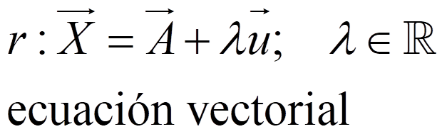
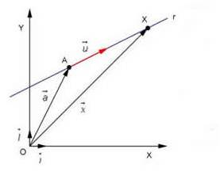
En coordenadas:
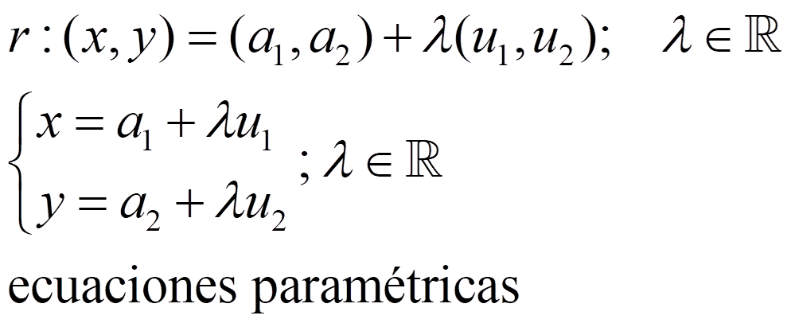
Si despejamos λ:
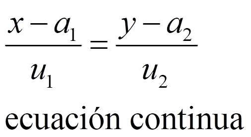
Haciendo el producto en cruz y reduciendo:
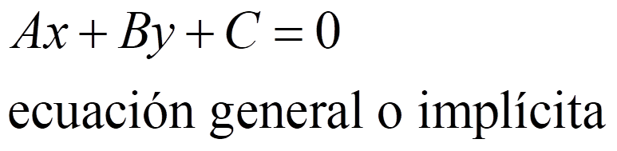
La pendiente de una recta, m, es la tangente del ángulo que forma la recta con el eje X : m = tg α.
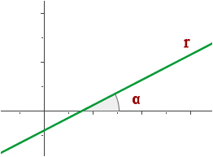
Se puede ver que:
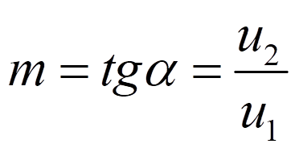
Entonces, una recta puede quedar determinada también si sabemos un punto y su pendiente:
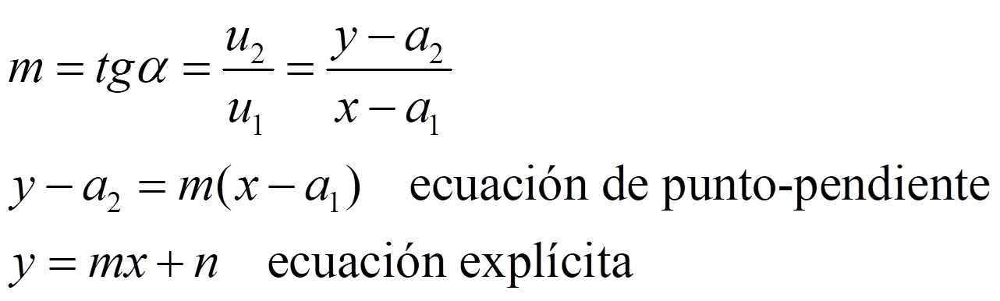
NOTA:
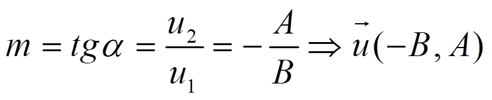
Una tercera opción para marcar la dirección de una recta es la de un vector ortogonal a su dirección, el vector normal, n(n1,n2). Entonces el producto escalar de este vector por el vector que une A y X es 0:
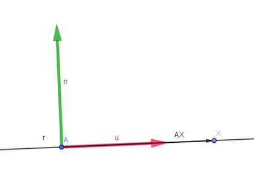
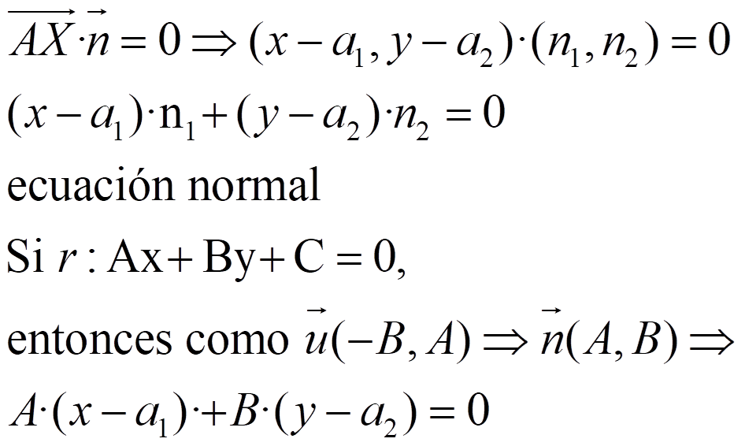
Ejemplo: encuentra todas la ecuaciones de la recta que pasa por el punto A(1,1) y tiene la dirección del vector u(-3,2).
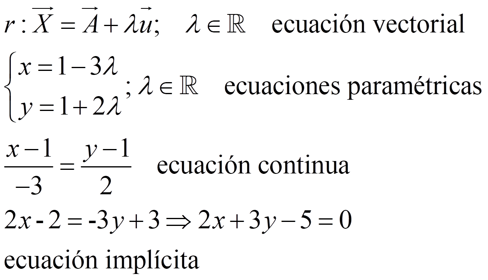
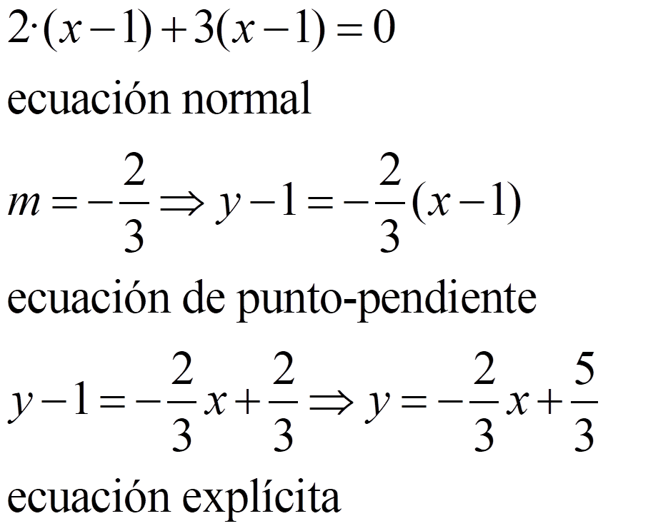
Ejercicios
1.- Encuentra todas las ecuaciones de la recta que pasa por el puntos (3,-1) y tiene la dirección del vector (-1,1).
2.- Encuentra las otras ecuaciones de la recta r: y = 3x + 2
Soluciones:
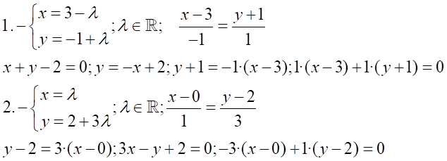